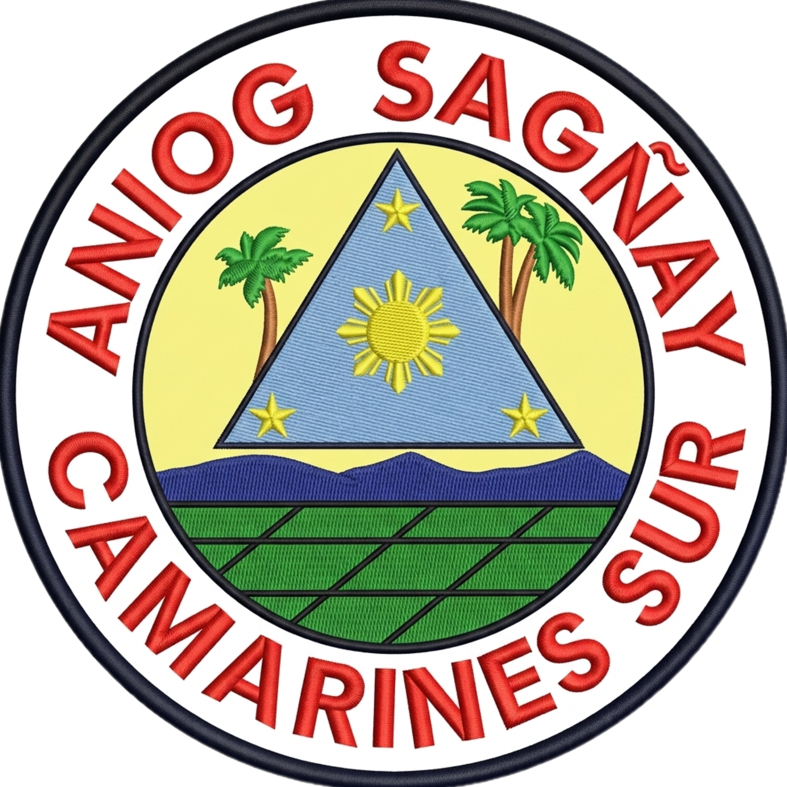
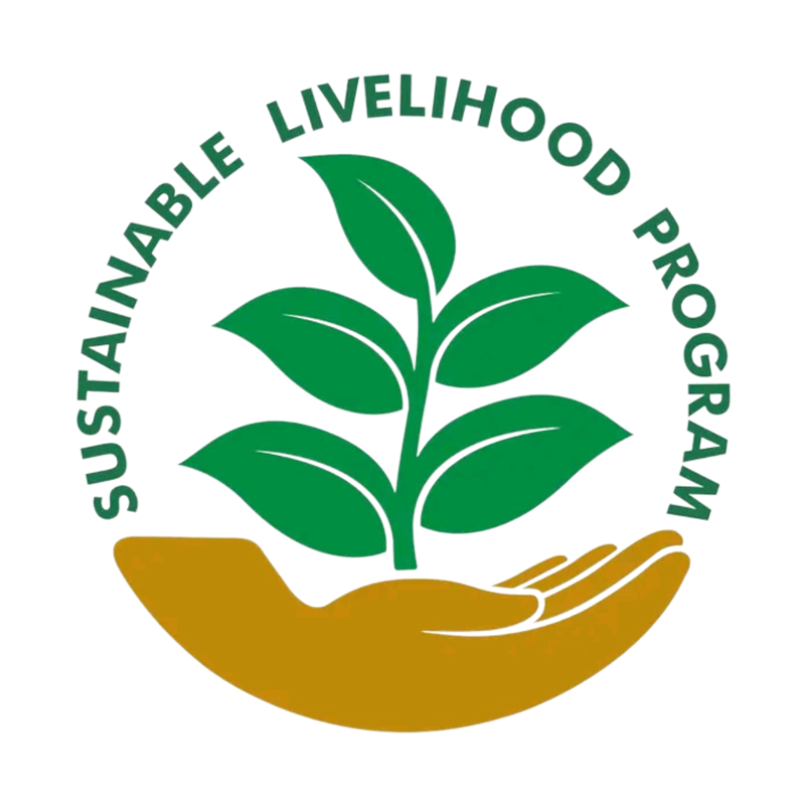

Unified System for Work and Growth

USWAG SLP System was created to simplify everyday business for the Samahan ng Masisinop SLP. It helps local cooperatives manage their inventory, automatically compute daily sales, and keep safe, verified records of every transaction. Built with care as an Information Technology project for Partido State University, this platform bridges technical innovation with grassroots community support.
System Developer: Bryan Jay Lumabas
This web-system was developed as part of the Information Technology program at Partido State University, San Juan Buenvista Street, Goa Camarines Sur. It applies concepts from web development and database management to provide a real-world, easy-to-use digital solution for the progress of barangay.